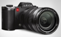

器材库 > 35mm画幅可换镜头数码相机 > SL

规格总览
产品类型
35mm画幅可换镜头数码相机
发布日期
2015-10-19
影像规格
影像传感器
CMOS
影像传感器尺寸
36×24mm
有效像素
2400万
影像处理器
徕卡 Maestro II 系列
低通滤镜
无
色彩空间
Adobe RGB, ECI RGB, sRGB
静态图像格式
JPEG, DNG
静态图像尺寸
JPG24MP 6000×4000, 12MP 4272×2848, 6MP 2976×1984DNG6000×4000
画幅比
3:2
短片格式
MOV, MP4
短片尺寸
4K (4096 × 2160) @ 24 fps; 4K (3840 × 2160) @ 25, 30 fps; 1080 @ 24, 25, 30, 50, 60, 100, 120 fps; 720 @ 24, 25, 30, 50, 60, 100, 120 fps
除尘系统
提供镜头清洁
镜头和对焦
镜头卡口
Leica L
兼容镜头
徕卡T/TL卡口镜头可直接使用，徕卡S、徕卡M、徕卡R和徕卡Cine镜头需使用相应的镜头转接环
对焦系统类型
反差自动对焦系统
对焦模式
AF-S (调焦优先), AF-C (快门优先）, MF （手动）, 触屏-AF
AF辅助灯/光
有
曝光控制
测光模式
中央重点测光, 评价测光, 点测光
曝光模式
程序 (P), 快门速度优先模式 (T) , 光圈优先模式 (A) 手动 (M)
拍摄模式
单次，连续，连续 慢, (4 fps), 连续 中， (7 fps), 连续 快 (11 fps), 自拍 2 秒, 自拍 12 秒, 延时, 包围曝光, 曝光时间可达 30 分钟
快门类型
焦平面快门
快门速度
1/8000 秒 至 60 秒，B为长达30分钟长时间曝光
闪光同步速度
1/180
曝光补偿
±3EV以1/3或1/2EV级调整
自动包围曝光
3/5 张以 1/2/3 光圈差; 直接增强型 JPEG-HDR
ISO感光度
自动，ISO 50 - ISO 50000
白平衡
预设 自动, 日光 5200 K, 云遮 6000 K, S阴影 7000 K, 白炽灯 3200 K, HMI 5600 K, 暖型荧光灯 4000 K, 冷型荧光灯 4500 K, Flash 5400 K, 灰卡, 手动色温设置 2000 K to 11500 K
连拍
最快连拍可达 11张／秒
闪光灯
闪光补偿
±3EV以1/3EV级调整
取景器/显示屏
取景器
EVF电子取景器
取景范围
100%
取景放大倍率
0.8倍
LCD类型
彩色TFT LCD
LCD尺寸
2.95英寸
文件输入/输出
内置存储容量
2GB
存储卡
SD/SDHC, SDXC
数据接口
USB3.0
视频/音频接口
HDMI 输出
无线功能
Wi-Fi
电源
电池
可充电锂离子电池BP-SCL4
续航能力
约400张照片
机身规格
材质
前部和后部机体外壳：铝制，研磨阳极氧化
颜色
黑色
尺寸
147×104×39mm
重量
771g
其它
配件端口
热靴, 脚架螺丝孔
工作温度
0~40℃
工作湿度
不高于85%
附件
机身, 相机背带, 镜头接口盖, 电池, 充电器含转接口, USB 3.0-连线, 使用说明书,质保卡, 徕卡镜头清洁纸
软件
图像处理软件（相机注册后可免费下载），Leica SL远程控制和数据传输应用程序，可在Apple App-Store/Google Play Store免费下载，用于远程控制的Leica Image Shuttle
该产品暂无存档的网友点评
产品图 / 样片
徕卡SL
评测 / 相关文章
- 详细内容 （存档）
- ［资讯］徕卡发布SL新固件Ver2.2与50/1.4A镜头 （存档）
- ［资讯］徕卡SL宣布2.1版固件更新登场 （存档）
- ［资讯］徕卡SL将于下周发布2.1版本固件更新 （存档）
- ［资讯］徕卡：不屑高像素之争 7问徕卡高管 （存档）
- ［资讯］S镜头玩转接 徕卡推出SL无反相机转接环 （存档）
- ［资讯］让摄影更自由 徕卡发布SL最新固件升级 （存档）
- ［资讯］徕卡SL新机在台湾NCC注册 （存档）